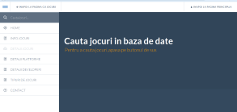
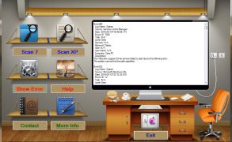

Obiectivul meu este să devin cât se poate de util viitorului angajator, să contribui la dezvoltarea firmei, să îmi ofer cunoștințele cât mai bine pentru a ajuta firma.
Sunt un tip ambițios, perfecționist și îmi place ca atunci când îmi sunt stabilite/îmi propun niște obiective să le îndeplinesc.
Mă integrez bine în orice echipă, nu fug de muncă, sunt sociabil, învăț repede și uit extrem de greu. Nu-mi place să fac muncă de mântuială sau să fac lucrurile din inerție sau pentru că așa se fac, fără să înțeleg de ce se fac așa. Îmi place să intru adânc în problemă, să înțeleg fenomenul, să-l reproduc și după aceea să fac treaba corect.
Dacă ar fi să mă caracterizez, cred că cel mai bine aș spune că sunt un rezolvator de probleme, datorită modului meu analitic de a gândi și rezolva problemele.
GameSpedia – website realizat în HTML, PHP și MySQL care oferă informații utilizatorilor despre diferite tipuri de jocuri, platformele pe care au fost lansate jocurile, capabilitățile consolelor sau cerințele de sistem pe care rulează respectivele jocuri. Pe scurt este o enciclopedie online despre jocuri.
Site-ul, design-ul, precum și codul din spatele siteului au fost realizate în totalitate de mine (folosind librării Open Source și editând resurse oferite gratuit).

Windows 7 Fix – Windows 7 Fix – aplicație folosită pentru a întreține sistemul de operare Windows 7.
Codul și conceptul aplicației au fost realizate în urmastudiului amănunțit al sistemului de operare Windows.
Aplicația a fost scrisă în C# (Visual Studio 2012/NET Framework 3.5) și îndeplinește următoarele funcții:
Error Viewer – aplicație folosită pentru a depista erorile din sistem. Aplicația rulează pe sistemele de operare Windows 7 și Windows XP și are o dimensiune extrem de mică (1.58 MB).
Aplicația a fost scrisă în C# (Visual Studio 2008/NET Framework 2.0), folosind librării Open Source și editând resurse oferite gratuit.

Sunt Beta Tester/QA voluntar pentru diferite aplicații Open Source pentru sistemul de operare Android (aplicații ca PowerNap, OGYouTube, Amplify, Greenify, Xposed etc) dar și iOS SnowCover, WinterBoard
Această muncă constă în semnalarea de erori, trimiterea de sugestii pentru îmbunătățirea aplicațiilor, propuneri pentru a face aplicațiile cât mai utile, traducerea aplicațiilor în limba română etc.
XDA Developers este unul dintre cele mai mari site-uri pentru suport și aplicații mobile.
Profil XDA
Ofer în mod voluntar Tech Support pentru depistarea și repararea problemelor software și hardware ale calculatoarelor pe forumul myGarage.ro.
myGarage.ro este unul din cele maimari forumuri românești pentru rezolvarea problemelor calculatoarelor și pentru discuții despre componentele hardware.
Profil myGarage
{kind=link}
{kind=link}
{kind=link}
{kind=link}
{kind=link}
{kind=link}
{kind=link}
{kind=link}
{kind=link}
{kind=link}